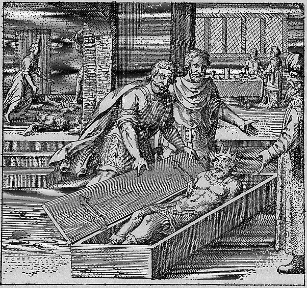

Typhon, depicted as a monstrous figure, strikes down or dismembers Osiris, whose body lies scattered in fragments across the landscape. In a secondary scene, the goddess Isis moves through the landscape gathering the scattered limbs, reassembling the divine body. The composition narrates dissolution and reconstitution: the god broken apart and painstakingly restored.
Typhon kills Osiris by a ruse, and after that he scatters his limbs far and wide, but Isis gathers them together again.
Maier retells the Egyptian myth of Osiris — murdered by Typhon through treachery, his body scattered, then painstakingly reassembled by Isis — as the complete arc of the alchemical opus. He identifies Typhon's killing with the nigredo dissolution, the scattering of limbs with the separation of elements, and Isis's gathering with the reconstitution and final rubedo. The discourse develops Osiris as the archetypal philosophical body that must be destroyed, dispersed, and reunited to achieve perfection. De Jong traces Maier's treatment of this myth through multiple alchemical traditions, noting that the Osiris-Isis cycle became one of the most enduring allegories in Western alchemy precisely because it encodes all three stages — death, purification, and resurrection — in a single narrative.
Emblem XLIV bears the motto: "Typhon kills Osiris by a ruse, and after that he scatters his limbs far and wide, but Isis gathers them together again."
Maier retells the Egyptian myth of Osiris — murdered by Typhon through treachery, his body scattered, then painstakingly reassembled by Isis — as the complete arc of the alchemical opus. He identifies Typhon's killing with the nigredo dissolution, the scattering of limbs with the separation of elements, and Isis's gathering with the reconstitution and final rubedo. The discourse develops Osiris as the archetypal philosophical body that must be destroyed, dispersed, and reunited to achieve perfection.
De Jong's source-critical analysis identifies the textual traditions Maier draws upon for this emblem.
The discourse draws on classical sources: Ovid, Metamorphoses X.560-704.
C. Morris Wescott: Final emblem in the Alchemical King sequence (XXIV, XXVIII, XXXI, XLIV).
C. Morris Wescott: Wescott analyzes Emblem XLIV's fuga: three voices enter simultaneously (unique in AF), the comes voice in triple-time parallels Osiris' dismemberment, and the piece resolves unexpectedly in Mixolydian Saturn rather than the expected C triad, reinforcing the cyclical nature of the alchemical process.
C. Morris Wescott: Wescott reads Emblem XLIV's tripartite image: Isis over dismembered Osiris (left background), turbaned man at table with chalice, rebec, and beaker (right background), and the King found intact in a box (foreground), with the table objects symbolizing faith, music, and alchemy.
C. Morris Wescott: Wescott identifies the Osiris-Typhon-Isis narrative in Emblem XLIV as symbolizing the Alchemical King's distribution throughout prima materia (dismemberment) and subsequent reunification, with the magus witnessing the complete alchemical process.
H.M.E. de Jong: Related to Emblem IV (brother-sister union). Osiris/Isis = male/female alchemical principles. Death and resurrection = dissolution and reconstitution of matter.
Process: Coniunctio (Coniunctio Oppositorum), Mortificatio, Putrefaction (Putrefactio)
Figure: Atalanta, Isis, Osiris, Typhon
Concept: Mytho-Alchemy (Mytho-Alchemia), Pelicanus
Source_Text: Metamorphoses
Musical: Fugue (Fuga)
Final emblem in the Alchemical King sequence (XXIV, XXVIII, XXXI, XLIV).
Citation: Figure 4 discussion
Wescott analyzes Emblem XLIV's fuga: three voices enter simultaneously (unique in AF), the comes voice in triple-time parallels Osiris' dismemberment, and the piece resolves unexpectedly in Mixolydian Saturn rather than the expected C triad, reinforcing the cyclical nature of the alchemical process.
Citation: pp. 4-5
Wescott reads Emblem XLIV's tripartite image: Isis over dismembered Osiris (left background), turbaned man at table with chalice, rebec, and beaker (right background), and the King found intact in a box (foreground), with the table objects symbolizing faith, music, and alchemy.
Citation: pp. 4-5
Wescott identifies the Osiris-Typhon-Isis narrative in Emblem XLIV as symbolizing the Alchemical King's distribution throughout prima materia (dismemberment) and subsequent reunification, with the magus witnessing the complete alchemical process.
Citation: p. 4
Related to Emblem IV (brother-sister union). Osiris/Isis = male/female alchemical principles. Death and resurrection = dissolution and reconstitution of matter.
Citation: Emblem XLIV section